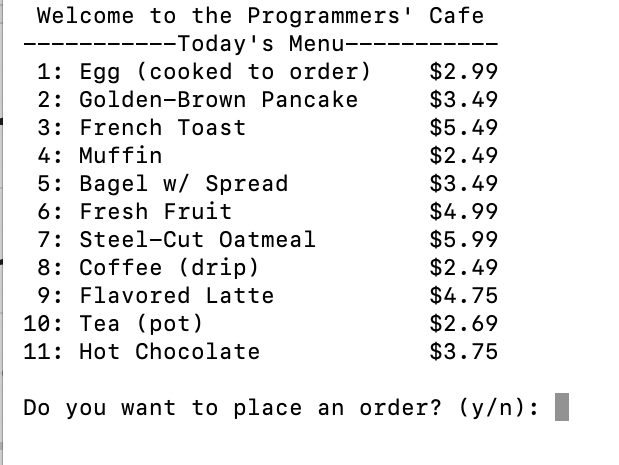
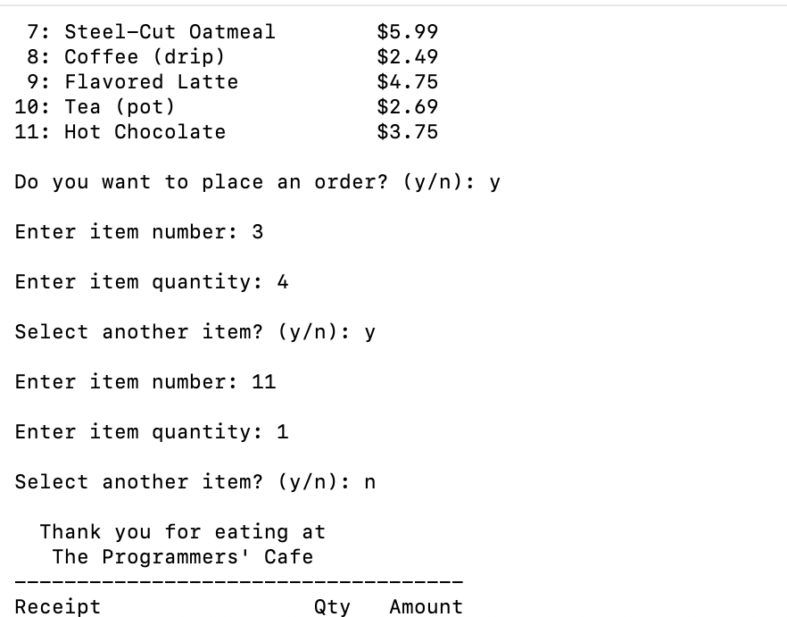
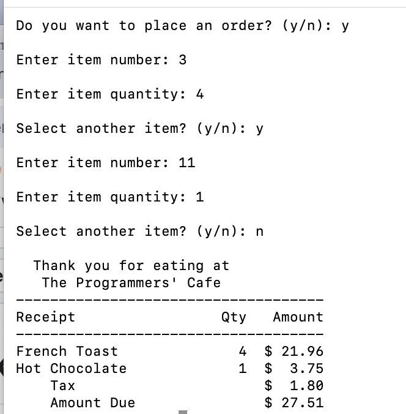

Restaurant
Course: CSCI 235
Language(s): C++
GitHub Repository: Private Repository
Project Description
This project is a C++ program that simulates a restaurant ordering system. It allows the user to select menu items and calculates the total cost of the order. The project was assigned to practice functions, user input, output, and decision making in C++.
How to Compile and Run
g++ -Wextra -std=c++17 -o Restaurant Restaurant.cpp
./Restaurant
How the Program Works
This program loads a menu from a file and lets customers choose the times and quantities they want. Then prints a formatted receipt that includes prices, totals, and sales tax.
Screenshots
Fig. 1. Example of the Restaurant menu.

Fig. 2. Example of the Restaurant program Input.

Fig. 3. Example of the Restaurant program output.
